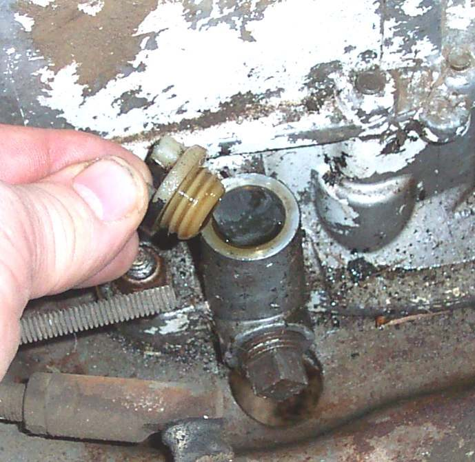

Mini bikes and other small utility engines often have no sight window and no level plug. Many have a plain filler hole with a short tube, with or without a dipstick. The level is read at the filler.
Safety
- Stand the machine level, with the engine off and cool enough to touch.
- Wipe up spilled oil before starting.
Steps
- Put the engine level. A horizontal shaft engine and a vertical shaft engine are both checked with the filler at the top.
- Clean around the filler and remove the cap.
- If there is no dipstick, the oil should reach the threads of the filler hole. Add oil slowly until it is at the threads, but do not let it overflow.
- If there is a dipstick, the usual method is to screw it in, then remove it and read the marks. Follow the manual for the engine.
- Use a funnel. Filler holes are small and in awkward places.
- Refit the cap and wipe the engine.
Check your work
- The level is at the threads or between the marks, with nothing running over the engine.
- No oil on the exhaust or the air filter.
If it did not fix the problem
- Level keeps dropping: Oil level drops but there is no visible leak.
- Smoke or oil blown out after overfilling: Too much oil in the engine.
- For bikes with a dipstick or window: Check the engine oil level.